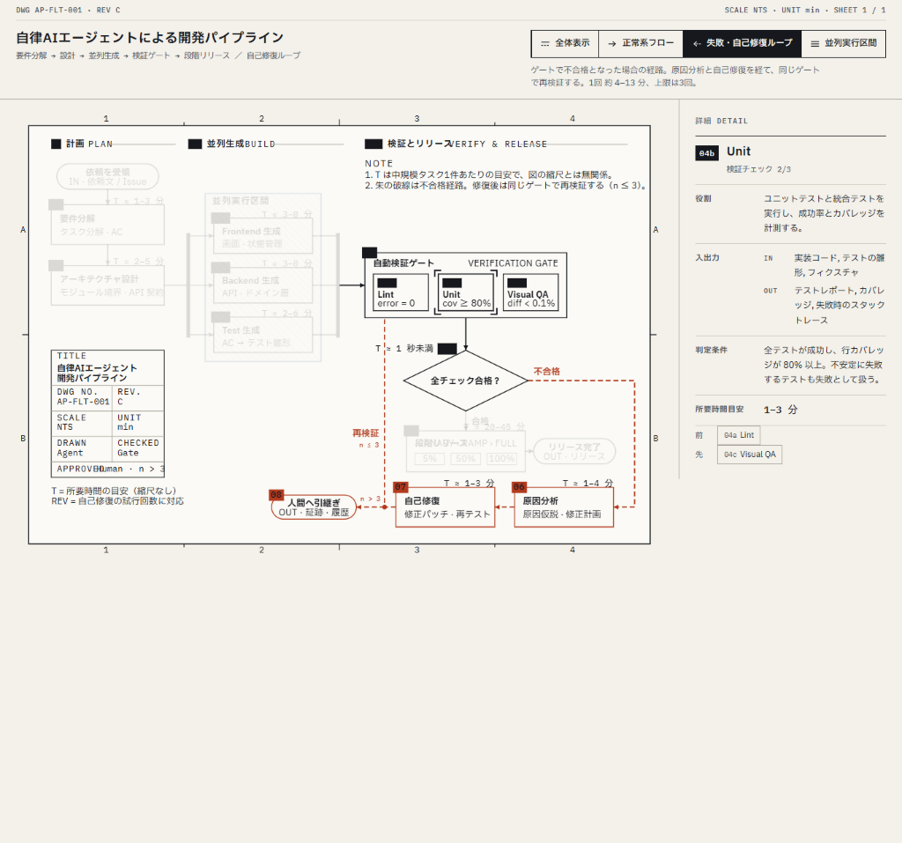
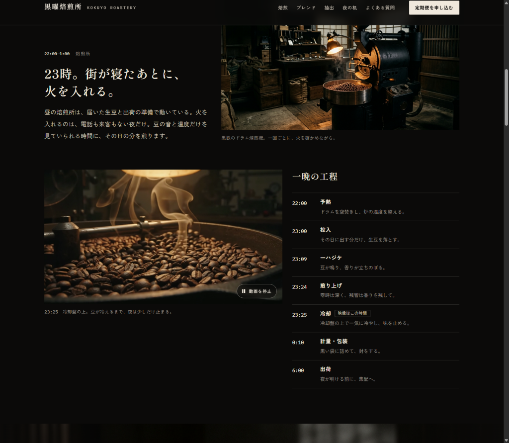
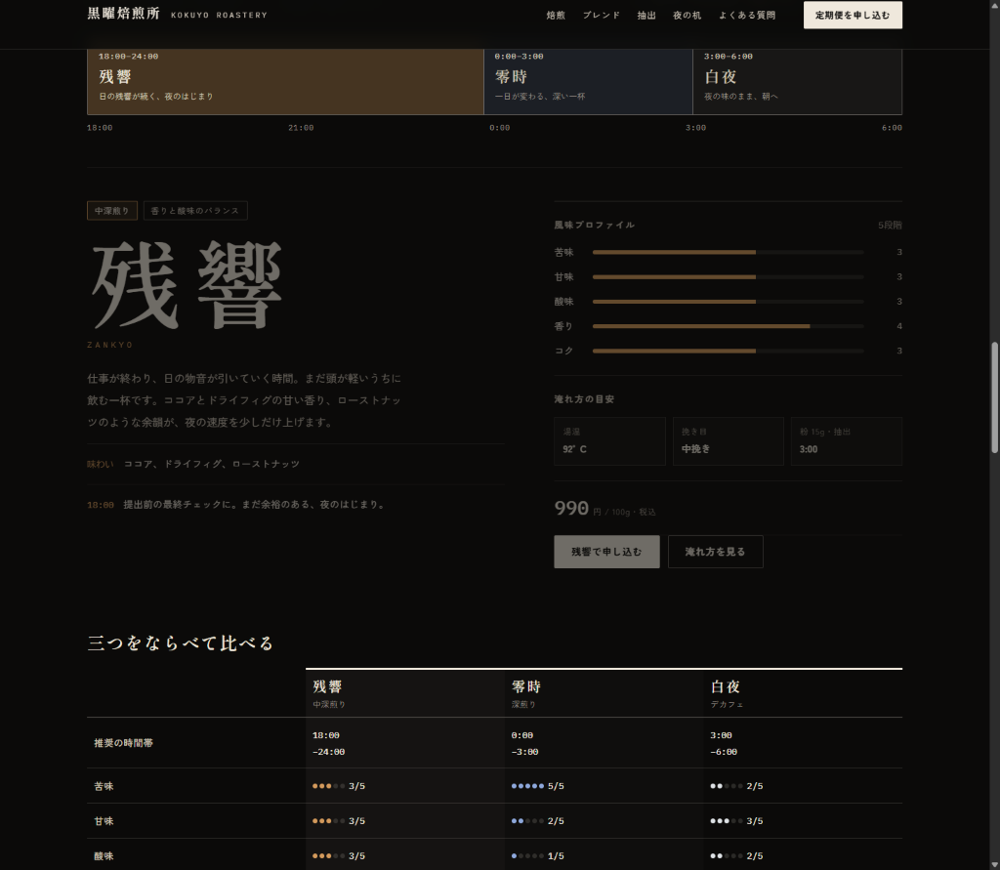
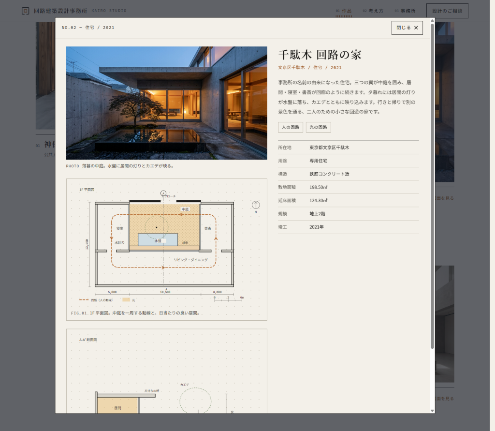
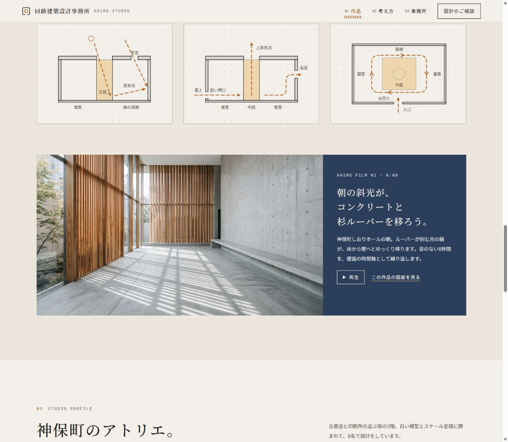

T3 CODE × GLM-5.4 × GOOGLE FLOW
題材から、
画面を立ち上げる。
T3 Code 上で GLM-5.4 に anything-frontend-art-direction スキルを適用し、工業製図面・深夜の焙煎所・神保町の建築設計事務所という3つの題材を並列制作した展示図録です。外部Webアセットは一切使わず、Google Flow で生成した全13点のオリジナル画像・動画のみで完結しています。

自律AI開発パイプライン図面
Interactive Flowchart · Pure GLM-5.4 · DWG AP-FLT-001

角丸ボックスの図解を捨て、JIS 工業製図面の佇まいで設計工程を描く。
要件分解から並列コード生成、自動検証ゲート、失敗時の自己修復ループまでを、暖かい製図用紙（#f2f0eb）と座標グリッド（A/B, 1–4）、左下の表題欄で構築。フィルタ切替で対象経路だけを濃く残し、ノード選択で役割・入出力・判定条件・所要時間目安を右パネルに表示します。
- Build
- 100% 純 GLM-5.4（T3 Code 並列スレッド）
- Art Direction
- 製図用紙・青い斜線ハッチング並列区間・朱色破線の不合格ループ
- Interaction
- 4種フローフィルタ切替・全ノード詳細インスペクタ
- Assets
- 純粋インライン SVG のみ（外部画像 0）
黒曜焙煎所 KOKUYO ROASTERY
Landing Page · 100% Pure GLM-5.4 · CLAUDE_CODE_MAX_RETRIES=100夜のために、夜に焙煎する。動画2本と「一晩の工程」で語る黒曜石のLP。
深夜にものづくりをする人のためのコーヒー豆定期便。Google Flow で生成したハンドドリップ動画と冷却盤の焙煎動画を軸に、黒鉄ドラム焙煎機・3種のマットブラック紙パッケージ・深夜の作業机写真を配置。「23:25 冷却（映像はこの時間）」のタイムライン演出や、3種ブレンド（零時・残響・白夜）のインタラクティブ比較まで GLM-5.4 が自力で完走しました。
- Build
- 100% 純 GLM-5.4（リトライ上限100設定で自力完走）
- Palette & Type
- 黒曜石
#0c0b0a× 琥珀#d9944e× Shippori Mincho - Local Media
- 動画2本（pour-over / roasting-loop）＋静止画4点
- Features
- 動画停止トグル・3種ブレンド比較・隔週/月1プラン切替・申込UI



回路建築設計事務所 KAIRO STUDIO
Studio Homepage · 100% Pure GLM-5.4 · Architectural Monograph


光と風と人の、回路をつくる。110KB に凝縮された建築作品集。
東京・神保町の架空建築設計事務所の公式サイト。朝の斜光が杉ルーバーとコンクリートを移ろう建築フィルム動画をファーストビューに据え、Selected Works の非対称スタッガード写真グリッド、各作品をクリックすると開くドット方眼紙上の平面図・断面図 SVG（「人の回路／光の回路」切替付き）、神保町アトリエ写真とアクセス図まで、コンソールエラー 0 で自力実装しています。
- Build
- 100% 純 GLM-5.4（110.9 KB・SVG エラー 0）
- Palette & Type
- 生成り紙
#f4f3ef× 杉色 × Shippori Mincho - Local Media
- 建築フィルム動画1本＋建築・アトリエ写真6点
- Features
- カテゴリフィルタ・SVG図面付き詳細モーダル・問い合わせバリデーション
Google Flow オリジナル素材標本
Contact Sheet · 13 Local Assets (3 MP4 Videos + 10 Photographs)実験記録と再現条件
Experiment Ledger · T3 Code × GLM-5.4| Work | Size | Local Assets | Errors | Demo |
|---|---|---|---|---|
| 01. Flowchart (Pure GLM-5.4) | 48.5 KB | Inline SVG | 0 | Open → |
| 02. LP KOKUYO (100% Pure GLM-5.4) | 71.3 KB | 6 / 6 (2 MP4 + 4 JPG) | 0 | Open → |
| 03. HP KAIRO (100% Pure GLM-5.4) | 110.9 KB | 7 / 7 (1 MP4 + 6 JPG) | 0 | Open → |
| Archive v1: Vertical LP | 54.8 KB | 6 / 6 | 0 | Open → |
| Archive v1: Vertical Monograph HP | 87.9 KB | 7 / 7 | 0 | Open → |
T3 CODE PROVIDER TUNING
Z.ai の Anthropic 互換エンドポイントで並列ビルドすると既定リトライ10回で 429 停止するため、~/.t3/userdata/settings.json の claude_glm に以下を設定して自力完走を実現しました。
{
"name": "CLAUDE_CODE_MAX_RETRIES",
"value": "100"
},
{
"name": "API_TIMEOUT_MS",
"value": "3000000"
}